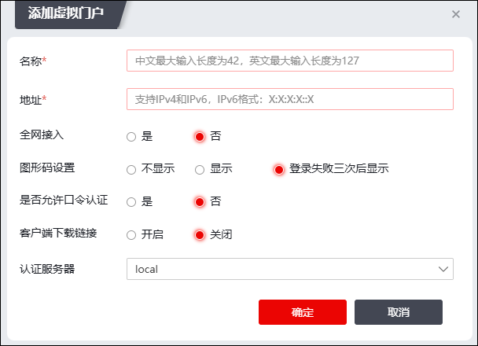

门户是一个校验用户ID的入口，同时关联一种认证服务器，具有认证控制功能的CGI。管理员通过门户配置模块，配置用户向NGFW认证时使用的登录界面，实现将不同的认证用户分配到认证服务器上。
配置门户及用户使用门户进行身份认证的具体操作步骤如下：
| 步骤1 | 选择 。 |
| 步骤2 | 添加门户。 |
1）点击“添加”，弹出窗口界面如下图所示。

在设置门户配置信息时，各项参数的具体说明如下表所示。
参数 |
说明 |
|---|---|
名称 |
必填项，设置门户的名称。中文最大输入长度为42个字符，英文最大输入长度为127个字符。 |
地址 |
必填项，设置NGFW的网络接口IP地址。点分十进制，例如：192.168.1.1。 |
全网接入 |
是否启用全网接入。 |
图形码设置 |
设置当口令认证用户登录网关时是否使用图形认证码，以便预防口令暴力破解。 1）选中“不显示”左侧的单选按钮，表示不使用图形认证码； 2）选中“总显示”左侧的单选按钮，表示一直使用图形认证码； 3）选中“登录失败三次后显示”左侧的单选按钮，表示用户连续三次输入错误后，自动生成认证码，继续登录则需要提供认证码。 说明： 管理员只能配置一种图形认证码的显示方式。 |
是否允许口令认证 |
设置认证方式是否为口令认证 |
客户端下载链接 |
SSLVPN登录界面是否显示SSLVPN客户端下载链接。可选项：开启、关闭。 |
认证服务器 |
选择虚拟门户关联的认证服务器。用户通过该虚拟门户登录网关，使用该认证服务器进行身份认证。 |
2）点击【确定】按钮完成门户的配置。